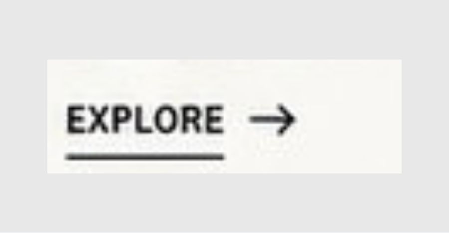
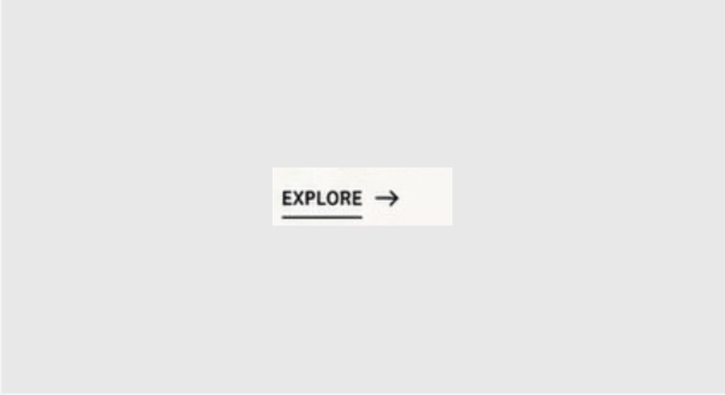

<title>Atlas Audit and Roadmap</title>
<meta name="claude:viewport-fit-sides" content="cover">
<link rel="preconnect" href="https://fonts.googleapis.com">
<link rel="preconnect" href="https://fonts.gstatic.com" crossorigin>
<link rel="stylesheet" href="https://fonts.googleapis.com/css2?family=Cormorant+Garamond:ital,wght@0,300;0,400;1,300;1,400&family=Manrope:wght@400;500;600;700&family=JetBrains+Mono:wght@400;500&display=swap">
<style>
/* Layout: a field-report document. One reading column with wide evidence rows;
   findings are set like atlas plates (mono label, serif title, coloured rule). */
:root{
 --bg:#f2f4f7;--panel:#ffffff;--text:#0d1220;--dim:#4a5466;--hair:#d9dee6;
 --ice:#0369a1;--mint:#047857;--rose:#be123c;--gold:#854d0e;
 --sev-high:#be123c;--sev-med:#a16207;--sev-low:#047857;
 --band:#02040b;--band-ink:#eef2f8;--band-dim:#a8b3c7;
 --f-display:"Cormorant Garamond",Garamond,"Times New Roman",serif;
 --f-body:"Manrope","Segoe UI",system-ui,sans-serif;
 --f-mono:"JetBrains Mono",ui-monospace,Menlo,monospace;
}
@media (prefers-color-scheme: dark){:root:not([data-theme="light"]){
 --bg:#05070d;--panel:#0c111d;--text:#eef2f8;--dim:#a8b3c7;--hair:#232b3a;
 --ice:#7dd3fc;--mint:#6ee7b7;--rose:#fda4af;--gold:#fde68a;
 --sev-high:#fda4af;--sev-med:#fde68a;--sev-low:#6ee7b7;--band:#000208;color-scheme:dark}}
:root[data-theme="dark"]{
 --bg:#05070d;--panel:#0c111d;--text:#eef2f8;--dim:#a8b3c7;--hair:#232b3a;
 --ice:#7dd3fc;--mint:#6ee7b7;--rose:#fda4af;--gold:#fde68a;
 --sev-high:#fda4af;--sev-med:#fde68a;--sev-low:#6ee7b7;--band:#000208;color-scheme:dark}
*{box-sizing:border-box}
body{background:var(--bg);color:var(--text);font:16px/1.6 var(--f-body);-webkit-font-smoothing:antialiased}
.wrap{max-width:1080px;margin:0 auto;padding-left:max(16px,env(safe-area-inset-left,0px));padding-right:max(16px,env(safe-area-inset-right,0px))}
h1,h2,h3{font-family:var(--f-display);font-weight:300;letter-spacing:-.015em;line-height:1;text-wrap:balance;margin:0}
h2{font-size:clamp(34px,4.6vw,56px)}
h3{font-size:clamp(22px,2.2vw,28px);font-weight:400;line-height:1.1}
p{margin:0}
.label{font-family:var(--f-mono);font-size:11px;letter-spacing:.16em;text-transform:uppercase;color:var(--dim)}
.rule{display:flex;align-items:center;gap:12px;color:var(--c,var(--ice))}
.rule:before{content:"";width:32px;height:1px;background:currentColor}
a{color:inherit}
:focus-visible{outline:2px solid var(--ice);outline-offset:3px}

/* Cover band, echoing the site's dark header */
.cover{background:var(--band);color:var(--band-ink);padding-block:56px 48px;
 background-image:radial-gradient(ellipse 60% 120% at 88% 0%,rgba(125,211,252,.14),transparent 60%),radial-gradient(ellipse 40% 120% at 0% 100%,rgba(253,164,175,.08),transparent 60%)}
.cover .label{color:var(--band-dim)}
.cover h1{font-size:clamp(44px,7vw,92px);margin-top:18px}
.cover h1 em{font-style:italic;color:#7dd3fc}
.cover .lede{max-width:44em;color:var(--band-dim);font-size:clamp(16px,1.3vw,18px);margin-top:20px}
.stats{display:grid;grid-template-columns:repeat(4,minmax(0,1fr));gap:1px;margin-top:40px;background:rgba(190,210,240,.18);border:1px solid rgba(190,210,240,.18);border-radius:12px;overflow:hidden}
.stat{background:var(--band);padding:16px 18px;min-width:0}
.stat b{display:block;font-family:var(--f-display);font-weight:300;font-size:clamp(30px,3.4vw,44px);line-height:1;color:#fff;font-variant-numeric:tabular-nums}
.stat span{display:block;margin-top:8px;font-family:var(--f-mono);font-size:10.5px;letter-spacing:.12em;text-transform:uppercase;color:var(--band-dim)}
.stat .bad{color:#fda4af}

section{padding-block:clamp(56px,7vw,88px);border-bottom:1px solid var(--hair)}
.head{display:grid;gap:14px;margin-bottom:32px;max-width:46em}
.head p{color:var(--dim);font-size:17px}

/* Findings */
.findings{display:grid;gap:14px}
.finding{display:grid;grid-template-columns:110px minmax(0,1fr);gap:20px;padding:20px 22px;background:var(--panel);border:1px solid var(--hair);border-radius:14px}
.sev{font-family:var(--f-mono);font-size:10.5px;letter-spacing:.14em;text-transform:uppercase;font-weight:500;align-self:start;padding:4px 9px;border-radius:999px;border:1px solid currentColor;width:fit-content}
.sev.high{color:var(--sev-high)}.sev.med{color:var(--sev-med)}.sev.low{color:var(--sev-low)}
.finding h3{font-family:var(--f-body);font-weight:600;font-size:17px;letter-spacing:0;line-height:1.35}
.finding p{color:var(--dim);margin-top:6px;font-size:15px}
.finding .ev{font-family:var(--f-mono);font-size:12px;color:var(--text);margin-top:10px;overflow-wrap:anywhere}
.done{display:inline-block;margin-left:8px;font-family:var(--f-mono);font-size:10px;letter-spacing:.12em;text-transform:uppercase;color:var(--mint);vertical-align:middle}

/* Evidence pair */
.pair{display:grid;grid-template-columns:1fr 1fr;gap:16px;margin:26px 0 8px}
.pair figure{margin:0;background:var(--panel);border:1px solid var(--hair);border-radius:12px;overflow:hidden}
.pair img{display:block;width:100%;height:auto;aspect-ratio:900/462;object-fit:cover;background:#e8e8e8}
.pair figcaption{padding:10px 14px;font-size:13px;color:var(--dim)}
.pair figcaption b{color:var(--text);font-weight:600}

/* Phases */
.phases{display:grid;gap:18px}
.phase{background:var(--panel);border:1px solid var(--hair);border-radius:16px;padding:24px 26px;display:grid;gap:18px}
.phase-top{display:flex;flex-wrap:wrap;align-items:baseline;justify-content:space-between;gap:10px 20px}
.phase-top h3{font-size:clamp(26px,2.6vw,34px)}
.meta{display:flex;flex-wrap:wrap;gap:8px}
.chip{font-family:var(--f-mono);font-size:10.5px;letter-spacing:.12em;text-transform:uppercase;padding:4px 10px;border-radius:999px;border:1px solid var(--hair);color:var(--dim);white-space:nowrap}
.chip.c{color:var(--c);border-color:currentColor}
.why{color:var(--dim);max-width:52em}
.items{list-style:none;margin:0;padding:0;display:grid;grid-template-columns:repeat(2,minmax(0,1fr));gap:10px 28px}
.items li{display:grid;grid-template-columns:auto minmax(0,1fr);gap:10px;font-size:15px;align-items:start}
.items li:before{content:"";width:6px;height:6px;margin-top:9px;border-radius:50%;background:var(--c)}
.items b{font-weight:600}

/* New items table */
.tablewrap{overflow-x:auto;border:1px solid var(--hair);border-radius:12px;background:var(--panel)}
table{border-collapse:collapse;width:100%;min-width:640px;font-size:14.5px}
th,td{text-align:left;padding:12px 16px;border-bottom:1px solid var(--hair);vertical-align:top}
th{font-family:var(--f-mono);font-size:10.5px;letter-spacing:.14em;text-transform:uppercase;color:var(--dim);font-weight:500}
tr:last-child td{border-bottom:0}
td:first-child{font-family:var(--f-mono);font-size:12px;color:var(--c,var(--dim));white-space:nowrap}
td b{font-weight:600}

/* Order */
.order{counter-reset:o;list-style:none;margin:0;padding:0;display:grid;gap:10px}
.order li{counter-increment:o;display:grid;grid-template-columns:44px minmax(0,1fr);gap:14px;align-items:baseline;padding:14px 18px;background:var(--panel);border:1px solid var(--hair);border-radius:12px}
.order li:before{content:counter(o,decimal-leading-zero);font-family:var(--f-mono);font-size:12px;color:var(--ice)}
.order b{font-weight:600}
.order span{color:var(--dim)}

.ask{background:var(--band);color:var(--band-ink);border-radius:18px;padding:30px 30px;display:grid;gap:14px;margin-top:8px}
.ask h3{color:#fff}
.ask p{color:var(--band-dim)}
footer{padding-block:28px 48px;color:var(--dim);font-size:13px}

@media (max-width:760px){
 .stats{grid-template-columns:repeat(2,minmax(0,1fr))}
 .finding{grid-template-columns:1fr;gap:10px}
 .items{grid-template-columns:1fr}
 .pair{grid-template-columns:1fr}
}
</style>

<header class="cover">
 <div class="wrap">
  <p class="label">Visual &amp; Motion Atlas &middot; Site audit &middot; October 2026</p>
  <h1>Audit and <em>roadmap</em></h1>
  <p class="lede">I tested all 19 pages, every landing effect, a sample of the 60 motion studies and the 40 UI components, at desktop and phone widths and at 2&times; pixel density, with an automated accessibility scan and a page-weight trace. Below: what is wrong, what I already fixed, and a phased plan for better landing effects, a stronger motion studio, crisp components and new styles.</p>
  <div class="stats">
   <div class="stat"><b>423</b><span>Entries &amp; assets reviewed</span></div>
   <div class="stat"><b class="bad">25.2&nbsp;MB</b><span>Home page first load</span></div>
   <div class="stat"><b class="bad">26 / 40</b><span>Art studies that animate a still</span></div>
   <div class="stat"><b>1</b><span>Accessibility violation (fixed)</span></div>
  </div>
 </div>
</header>

<main class="wrap">

<section aria-labelledby="f-title">
 <div class="head">
  <p class="label rule" style="--c:var(--rose)">Findings</p>
  <h2 id="f-title">What the audit found</h2>
  <p>Ordered by how much each one costs a visitor. Items marked fixed are already on the branch.</p>
 </div>

 <div class="findings">
  <article class="finding">
   <span class="sev high">High</span>
   <div>
    <h3>UI previews are blurry because tiny crops are stretched to fill cards <span class="done">Partly fixed</span></h3>
    <p>About 220 previews (the 201 extracted assets, the design-system cards and the home plates) are cut from three 1254&times;1254 images, each holding four mockups. A 105&times;34 px button crop was being stretched to fill a 400 px card: up to 11&times; wide and 37&times; tall. I capped every fragment at its source size, so nothing upscales now. The crops are still low-resolution JPEG, which is why the UI components need rebuilding as native HTML (phase 2).</p>
    <p class="ev">background-size up to 1194% × 3688% · extracted.js fragment() · now capped with --src-w</p>
   </div>
  </article>

  <article class="finding">
   <span class="sev high">High</span>
   <div>
    <h3>Home page downloads 25 MB on first visit</h3>
    <p>The hero film is 12.4 MB at 2.6 Mbps and autoplays, browsers without H.264 fetch the 9 MB WebM too, and the catalogue, expansion and asset data (0.75 MB of JSON) plus four 0.4 MB sprite sheets load before anyone leaves the hero. On a phone connection that is the whole first impression.</p>
    <p class="ev">101 requests · mp4 12.4 MB · webm 9.0 MB · jpg 1.9 MB · json 0.8 MB · fonts as .otf</p>
   </div>
  </article>

  <article class="finding">
   <span class="sev high">High</span>
   <div>
    <h3>Landing effects are demos in a box, not effects you can feel</h3>
    <p>All 18 effects play inside a 460 px panel driven by an "Effect position" slider instead of real scrolling, so parallax, sticky stories and scroll landmarks never behave the way they would on a site. About twelve reuse the same vase artwork. There is no code to copy, no phone preview and no intensity or easing controls, and several current techniques are missing (scroll-driven CSS, View Transitions, stacking cards, image-sequence scrub, shader distortion).</p>
    <p class="ev">L01–L18 · landing.js · #landingWorkbench</p>
   </div>
  </article>

  <article class="finding">
   <span class="sev med">Medium</span>
   <div>
    <h3>Most animation art studies pan across a still image</h3>
    <p>The studio runs smoothly (60 fps on every study I sampled, about 6 MB of memory) and the controls are good: speed, scrub, loop and reduced motion. But only 14 of the 40 art studies are generated in code. The other 26, including Raymarching, Mandelbulb, Fluid dynamics and Volumetric smoke, pan and zoom across a generated still. The page labels them honestly; they just do not show the technique. The 20 interface studies sit in a small 300 px card inside a large dark frame, and nothing helps you design timing: no easing curve, no spring tuning, no code export.</p>
    <p class="ev">studies.js describe() · 14 procedural · 26 illustrative stills · 20 interface</p>
   </div>
  </article>

  <article class="finding">
   <span class="sev med">Medium</span>
   <div>
    <h3>UI components are crisp but thin</h3>
    <p>The 40 components render as real HTML, but each tile shows one static state on a large empty grey square in a single material. There are no hover, focus, disabled, loading or error states to compare, no dark mode, no copyable code and no keyboard map. The detail view repeats the same five headings for every component.</p>
    <p class="ev">#componentGrid · .componentPlate · detail tabs: Reference / Applied example / Prompts</p>
   </div>
  </article>

  <article class="finding">
   <span class="sev med">Medium</span>
   <div>
    <h3>The style library is missing the directions clients are asking for now</h3>
    <p>12 visual styles, 32 design systems, 36 art styles and 8 film looks is a strong base, but there is nothing for liquid glass, aurora and mesh gradients, claymorphism, editorial maximalism, anti-design type, solarpunk, terminal interfaces or zine print.</p>
    <p class="ev">S01–S12 · D01–D32 · art and film sets</p>
   </div>
  </article>

  <article class="finding">
   <span class="sev low">Low</span>
   <div>
    <h3>Catalogue counts disagree</h3>
    <p>The Catalogue intro and the "All specimens" button say 423; the grid says 222 entries. 423 includes the 201 extracted assets, which the grid does not show.</p>
    <p class="ev">.archivenote · .collectionrail [data-collection=""] · #resultCount</p>
   </div>
  </article>

  <article class="finding">
   <span class="sev low">Low</span>
   <div>
    <h3>Accessibility is in good shape <span class="done">Fixed</span></h3>
    <p>An axe scan of 12 pages against WCAG 2 A and AA found one issue: the amber plate label I added was below 4.5:1 on paper. It is now darker. Reduced motion is respected across the hero, studio and effects, and every control is reachable by keyboard.</p>
    <p class="ev">axe-core 4.10 · wcag2a + wcag2aa · 12 routes</p>
   </div>
  </article>
 </div>

 <div class="pair">
  <figure><figcaption><b>Before</b> &middot; 105 &times; 34 px crop stretched to fill the card (live site, 2&times; screen)</figcaption></figure>
  <figure><figcaption><b>After the quick fix</b> &middot; shown at source size: no smear, but the crop is still small and low-resolution</figcaption></figure>
 </div>
</section>

<section aria-labelledby="p-title">
 <div class="head">
  <p class="label rule" style="--c:var(--mint)">Plan</p>
  <h2 id="p-title">Six phases, each shippable on its own</h2>
  <p>Every phase ends with a working site, so you can stop, publish and review between them. Sizes are relative: S is a session, M is two or three, L is a larger build.</p>
 </div>

 <div class="phases">
  <article class="phase" style="--c:var(--ice)">
   <div class="phase-top"><h3>1 &middot; Crisp and fast</h3><div class="meta"><span class="chip c">Size S</span><span class="chip">Fixes findings 1, 2, 7</span></div></div>
   <p class="why">Cut the first load from 25 MB to roughly 5 MB and remove the remaining softness, before adding anything new.</p>
   <ul class="items">
    <li><span><b>Re-encode the hero</b> at about 1.4 Mbps (around 6 MB), offer AV1 first, and serve the 720p cut on phones and slow connections.</span></li>
    <li><span><b>Load data when it is needed</b>: catalogue and asset JSON on the first visit to an inner page, not on the hero.</span></li>
    <li><span><b>Re-export the mockups</b> as individual 2&times; WebP files with <code>srcset</code>, so cards and home plates stay sharp on retina screens.</span></li>
    <li><span><b>Fonts as WOFF2</b>, subset to Latin, preloaded; lazy-load every image below the fold.</span></li>
    <li><span><b>Fix the 423 / 222 wording</b> so every count names what it counts.</span></li>
    <li><span><b>Performance budget</b> in the README: home under 6 MB, inner pages under 2 MB.</span></li>
   </ul>
  </article>

  <article class="phase" style="--c:var(--mint)">
   <div class="phase-top"><h3>2 &middot; UI components, rebuilt</h3><div class="meta"><span class="chip c">Size L</span><span class="chip">Fixes findings 1, 5</span></div></div>
   <p class="why">Replace the raster UI fragments with real components you can inspect, theme and copy. This is the permanent fix for the blur.</p>
   <ul class="items">
    <li><span><b>40 native components</b> in HTML and CSS, crisp at any size, replacing the image crops in the UI components category.</span></li>
    <li><span><b>State matrix</b> on every component: default, hover, focus, pressed, disabled, loading, error and empty, side by side.</span></li>
    <li><span><b>Theme switcher</b> across the 12 visual styles, light and dark, comfortable and compact density.</span></li>
    <li><span><b>Live props panel</b>: label length, icon, size and radius, so you can try real content.</span></li>
    <li><span><b>Copy code</b> as HTML/CSS, React with Tailwind, or design tokens as JSON.</span></li>
    <li><span><b>Accessibility card</b> per component: keyboard map, ARIA roles, focus order, and the WCAG criteria it meets.</span></li>
   </ul>
  </article>

  <article class="phase" style="--c:var(--rose)">
   <div class="phase-top"><h3>3 &middot; Landing effects 2.0</h3><div class="meta"><span class="chip c">Size L</span><span class="chip">Fixes finding 3</span></div></div>
   <p class="why">Every effect becomes something you scroll through for real, tune, and take away as code.</p>
   <ul class="items">
    <li><span><b>Live preview</b>: each effect opens full-screen in a real scrolling page, with desktop and phone frames.</span></li>
    <li><span><b>Tune it</b>: intensity, duration, easing and trigger point, with the change shown live.</span></li>
    <li><span><b>Get the code</b> in vanilla HTML/CSS/JS, GSAP or Motion, with reduced-motion handling included.</span></li>
    <li><span><b>Performance badge</b>: which properties it animates, whether it stays on the GPU, and its frame cost.</span></li>
    <li><span><b>New imagery</b> for each effect instead of the shared vase set, drawn from the Atlas's own styles.</span></li>
    <li><span><b>12 new effects</b>, listed below.</span></li>
   </ul>
  </article>

  <article class="phase" style="--c:var(--rose)">
   <div class="phase-top"><h3>4 &middot; Motion studio 2.0</h3><div class="meta"><span class="chip c">Size L</span><span class="chip">Fixes finding 4</span></div></div>
   <p class="why">Turn the studio from a gallery into a place where you design timing, and make the art studies show the real technique.</p>
   <ul class="items">
    <li><span><b>Easing lab</b>: drag the two cubic-bezier handles or tune a spring (stiffness, damping, mass), watch it play, and compare two curves side by side.</span></li>
    <li><span><b>Keyframe timeline</b> for the 20 interface studies, at full width instead of a 300 px card.</span></li>
    <li><span><b>Real shaders</b> for the techniques currently shown as stills, starting with Raymarching / SDF, Mandelbulb, Fluid dynamics, Volumetric smoke, Reaction-diffusion and Gaussian splats.</span></li>
    <li><span><b>Export</b> any study as WebM or GIF, and its timing as CSS, Web Animations, GSAP or Motion code.</span></li>
    <li><span><b>Share links</b> that keep the study, speed and curve, so a direction can be sent to a client.</span></li>
    <li><span><b>Motion tokens</b>: save a set of durations and curves to a project and export them with the brief.</span></li>
   </ul>
  </article>

  <article class="phase" style="--c:var(--gold)">
   <div class="phase-top"><h3>5 &middot; New styles</h3><div class="meta"><span class="chip c">Size M</span><span class="chip">Fixes finding 6</span></div></div>
   <p class="why">Eight directions with the same depth as the existing twelve: a style tile, palette, type pairing, a component skin from phase 2, a paired landing effect from phase 3, and a ready prompt.</p>
   <ul class="items">
    <li><span><b>S13 Liquid glass</b>: refractive, lensing panels after Apple's 2025 interface language.</span></li>
    <li><span><b>S14 Aurora and mesh gradients</b>: soft moving colour fields behind crisp type.</span></li>
    <li><span><b>S15 Claymorphism</b>: inflated, matte, toy-like surfaces with double shadows.</span></li>
    <li><span><b>S16 Editorial maximalism</b>: magazine layering, oversized serif, collage.</span></li>
    <li><span><b>S17 Anti-design type</b>: broken grids, clashing scale, raw HTML energy.</span></li>
    <li><span><b>S18 Solarpunk</b>: botanical forms with clean technology, warm greens and brass.</span></li>
    <li><span><b>S19 Terminal / CLI</b>: monospace, command palettes, ASCII charts.</span></li>
    <li><span><b>S20 Zine and riso print</b>: misregistered spot colour, halftone, staples and tape.</span></li>
   </ul>
  </article>

  <article class="phase" style="--c:var(--ice)">
   <div class="phase-top"><h3>6 &middot; New features</h3><div class="meta"><span class="chip c">Size M</span><span class="chip">Across the site</span></div></div>
   <p class="why">Tools that turn browsing into a finished creative direction.</p>
   <ul class="items">
    <li><span><b>Compare anything</b>: put any two entries side by side (style against style, effect against effect), not only the preset sets.</span></li>
    <li><span><b>Direction finder</b>: five visual questions that recommend a style, a type pairing, a motion curve and an effect.</span></li>
    <li><span><b>Moodboard export</b>: turn a project into a one-page board as PNG or PDF, ready for a client.</span></li>
    <li><span><b>Brief builder</b>: a project's choices become a written brief plus tokens (colour, type, motion) as JSON and CSS.</span></li>
    <li><span><b>Recently viewed and saved</b> in the search palette, with keyboard shortcuts to save and compare.</span></li>
    <li><span><b>Offline use</b>: the atlas installs as an app and keeps saved work without a connection.</span></li>
   </ul>
  </article>
 </div>
</section>

<section aria-labelledby="n-title">
 <div class="head">
  <p class="label rule" style="--c:var(--rose)">Phase 3 detail</p>
  <h2 id="n-title">Twelve new landing effects</h2>
  <p>Chosen to cover what the current 18 cannot show. Each ships with a live scroll preview, controls, code and a reduced-motion version.</p>
 </div>
 <div class="tablewrap">
  <table>
   <thead><tr><th scope="col">Code</th><th scope="col">Effect</th><th scope="col">What it shows</th><th scope="col">Built with</th></tr></thead>
   <tbody style="--c:var(--rose)">
    <tr><td>L19</td><td><b>Scroll-driven reveals</b></td><td>Elements animate against scroll position with no JavaScript</td><td>CSS animation-timeline</td></tr>
    <tr><td>L20</td><td><b>Page morph</b></td><td>A card grows into its detail page across a navigation</td><td>View Transitions API</td></tr>
    <tr><td>L21</td><td><b>Stacking cards</b></td><td>Sections pin and stack like a deck as you scroll</td><td>position: sticky + scale</td></tr>
    <tr><td>L22</td><td><b>Zoom-through hero</b></td><td>The camera flies through a word or window into the next section</td><td>Transform + clip-path</td></tr>
    <tr><td>L23</td><td><b>Film scrub</b></td><td>Scrolling scrubs the Genesis film frame by frame</td><td>Image sequence on canvas</td></tr>
    <tr><td>L24</td><td><b>Split-text reveal</b></td><td>Headlines rise in by line, word or letter</td><td>Text splitting + stagger</td></tr>
    <tr><td>L25</td><td><b>Liquid hover</b></td><td>Images ripple and distort under the cursor</td><td>WebGL fragment shader</td></tr>
    <tr><td>L26</td><td><b>Aurora field</b></td><td>A slow, living gradient background that responds to scroll</td><td>Shader or CSS mesh</td></tr>
    <tr><td>L27</td><td><b>Data reveal</b></td><td>Numbers count up and charts draw as they enter</td><td>IntersectionObserver + SVG</td></tr>
    <tr><td>L28</td><td><b>Pinned horizontal story</b></td><td>Vertical scroll drives a horizontal chapter strip</td><td>Sticky + scroll progress</td></tr>
    <tr><td>L29</td><td><b>Ink trail cursor</b></td><td>The pointer leaves a fading brush stroke</td><td>Canvas with smoothing</td></tr>
    <tr><td>L30</td><td><b>Infinite canvas</b></td><td>Drag and zoom across a moodboard that never ends</td><td>Pointer events + transforms</td></tr>
   </tbody>
  </table>
 </div>
</section>

<section aria-labelledby="o-title">
 <div class="head">
  <p class="label rule" style="--c:var(--gold)">Recommendation</p>
  <h2 id="o-title">Suggested order</h2>
  <p>Fix the foundation first, then build the features the site is named for.</p>
 </div>
 <ol class="order">
  <li><div><b>Phase 1, Crisp and fast.</b> <span>Smallest job, and every later feature benefits from a light, sharp page.</span></div></li>
  <li><div><b>Phase 2, UI components rebuilt.</b> <span>The permanent fix for the blur you noticed, and phases 3 and 5 reuse these components.</span></div></li>
  <li><div><b>Phase 3, Landing effects 2.0.</b> <span>The most visible upgrade; the new effects pair with the new styles.</span></div></li>
  <li><div><b>Phase 4, Motion studio 2.0.</b> <span>The easing lab first, then real shaders for the still-image studies.</span></div></li>
  <li><div><b>Phase 5, New styles.</b> <span>Built on the component skins and effects from phases 2 and 3.</span></div></li>
  <li><div><b>Phase 6, New features.</b> <span>Direction finder and moodboard export once the library has its new depth.</span></div></li>
 </ol>
 <div class="ask" style="margin-top:28px">
  <h3>Your call</h3>
  <p>Tell me which phase to start, or reorder them. If you have no preference I will begin with phase 1 and then phase 2, and show you each one before moving on.</p>
 </div>
</section>

</main>
<footer class="wrap">Visual &amp; Motion Atlas &middot; audit run against a local copy of the site and the live site at desktop (1440 px) and phone (390 px) widths, 1&times; and 2&times; density.</footer>
